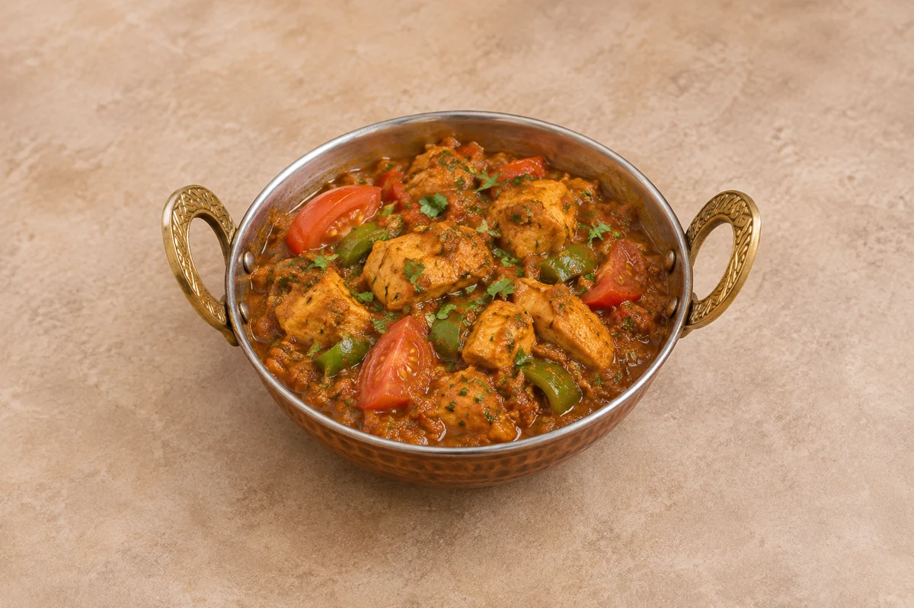

Moghul Curry
Uses prepared base gravy and pre-cooked meat.
Curries
A base-gravy chicken karahi with fresh chilli paste and toasted spices.
Estimated total: About 25 min totalUses prepared base gravy and pre-cooked chicken breast. Preparation of those is additional; rice or naan is separate. Cook larger quantities in batches.
Adapted from Misty Ricardo’s Karahi Curry, with adjusted quantities and a whole-batch fresh paste.
Ingredient quantities update automatically

Fresh paste: the first seven ingredients. Curry: the remaining ingredients. Use the whole fresh-paste batch.
Use fully cooked chicken breast. Dilute and heat the base gravy before measuring; keep it pourable and have a little extra ready.
The heat from the pasta cooks the eggs — do not overcook or it will scramble.
Cool promptly and refrigerate covered within 2 hours. Eat within 48 hours, or sooner if the chicken or gravy was prepared earlier. Cooking this curry reheats the pre-cooked chicken: do not reheat that chicken again.
For batch cooking, freeze sauce before adding the pre-cooked chicken. Defrost fully in the fridge and use within 24 hours; finish with freshly cooked chicken breast. Do not plan to freeze the finished curry for another reheating of its chicken.
Reheat sauce-only portions once until steaming hot, then finish with freshly cooked chicken breast. If the finished curry has already reheated its chicken, eat safely chilled leftovers cold rather than heating again. Follow the earlier preparation times of both chicken and gravy.
Use cooked chickpeas or vegetables in place of chicken. Reduce chilli powder or the fresh chilli for less heat. Serve with separately prepared rice or naan; rice needs its own shorter cooling and storage times.
Cool cooked leftovers in small portions and refrigerate within 2 hours. Keep the fridge at 0–5°C and the freezer around −18°C. Freeze suitable leftovers promptly. Defrost fully in the fridge and use within 24 hours. Reheat only once, until steaming hot all the way through. Follow any shorter use-by or opened-pack instructions; using older cooked ingredients does not restart their storage time.
Food-safety guidance: Food Standards Agency: chilling and freezing · reheating leftovers.